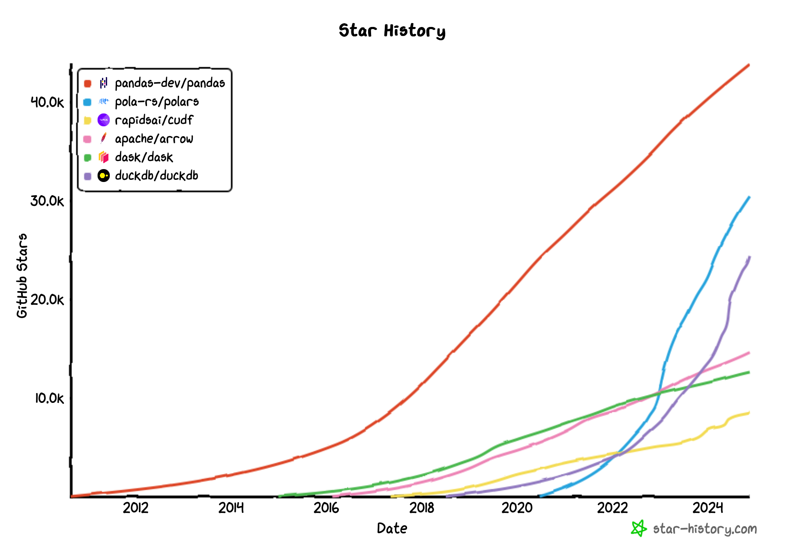

Python dataframes with pandas and polars
PyData Tallinn x Python CodeClub
27 November 2024
Bios
Andreas Beger
- 🏢 Data Scientist, Consult.
- 🏃♂️🐌 Slow marathoner
- 📍 🇩🇪/🇭🇷 → 🇺🇸 → 🇪🇪
- 🎓 PhD Political Science
Isaac Chung
- 🏢 Staff Data Scientist, Wrike
- 🏊♂️🚴🏃♂️ Fast triathlete
- 📍 🇭🇰 → 🇨🇦 → 🇪🇪
- 🎓 MS Machine Learning
🐍 We are also the PyData Tallinn co-organizers.
Getting setup
Instructions for how to follow along in notebooks…GitHub codespaces?
What are dataframes?
Definition
- Dataframes are a data type representing 2D tables
- Where the columns have names
- Unlike matrices or arrays, columns might have different data types
- And the rows are identified by one or more ID variables
| x | y | group |
|---|---|---|
| 1 | 2 | a |
| 4 | 7 | b |
| 3 | 8 | a |
| 9 | 2 | b |
Why?
Common dataframe operations
- 📖 ✍️ read and write
- 🔬 inspect
- 🛒 select columns
- 🔍 filter rows
- 🥪 mutate, add columns
- 👨👩👧👦 group and aggregate
- 🤝 join other dataframes
- 🧱 reshape wide, long
Agenda
- Pandas
- Basic operations through group/aggregate
- Polars
- Expressions
- Joining dataframes and reshaping / pivoting
- Big picture
- Pandas and Polars pros and cons
- Some other frameworks
Link to notebooks
Section 1: pandas
History
Wes McKinney
- 2008
originally built on top of numpy pandas 2 () adds support for arrow backend
Getting started
import numpy as np
import pandas as pd
df = pd.DataFrame({
"quarter": [1, 1, 1, 2, 2, 2, 3, 3, 3, 4, 4, 4],
"x": np.random.randn(12),
"date": pd.date_range("2024-01-01", periods=12, freq="MS")
})
df.head()| quarter | x | date | |
|---|---|---|---|
| 0 | 1 | 1.068246 | 2024-01-01 |
| 1 | 1 | -0.660666 | 2024-02-01 |
| 2 | 1 | -0.253664 | 2024-03-01 |
| 3 | 2 | 0.747306 | 2024-04-01 |
| 4 | 2 | -0.132748 | 2024-05-01 |
Components of a dataframe
Series
Input - reading data
Inspecting
Inspecting
<class 'pandas.core.frame.DataFrame'>
RangeIndex: 14259 entries, 0 to 14258
Data columns (total 8 columns):
# Column Non-Null Count Dtype
--- ------ -------------- -----
0 date 14259 non-null object
1 persons_involved 14259 non-null int64
2 killed 14259 non-null int64
3 injured 14259 non-null int64
4 county 14259 non-null object
5 pedestrian_involved 14259 non-null int64
6 accident_type 14259 non-null object
7 light_conditions 14259 non-null object
dtypes: int64(4), object(4)
memory usage: 891.3+ KBSelecting columns
Different ways, one is indexing with []:
0 2014-10-24 08:45:00
1 2014-10-24 13:45:00
2 2014-08-11 00:00:00
3 2014-11-17 17:32:00
Name: date, dtype: objectMultiple columns
Mutating columns
Right now date is stored as a string:
Sidebar: Pandas Series
Filtering rows
Mutating dataframes
accidents["killed_or_injured"] = accidents["killed"] + accidents["injured"]
accidents[['killed', 'injured', 'killed_or_injured']].head()| killed | injured | killed_or_injured | |
|---|---|---|---|
| 0 | 0 | 1 | 1 |
| 1 | 0 | 1 | 1 |
| 2 | 0 | 1 | 1 |
| 3 | 0 | 2 | 2 |
| 4 | 0 | 1 | 1 |
Grouping and summarizing
How many people were harmed, by accident type?
pandas is great
2017, Wes McKinney (creator of pandas):
10 Things I Hate About Pandas
- Inefficient memory management, need 5-10x data size
- Eager evaluation → limited query planning
- No multi-core
Section 2: polars
History
2020 Ritchie Vink
Uses arrow as internal representation
(Created by Wes McKinney in 2016!)
new slides
- Out with indices
- Out with
.loc,.iloc - Out with
[ - In with lazy evaluation
- Expressions
Getting started
| date | persons_involved | killed | injured | county |
|---|---|---|---|---|
| str | i64 | i64 | i64 | str |
| "2014-10-24 08:45:00" | 2 | 0 | 1 | "Harju maakond" |
| "2014-10-24 13:45:00" | 2 | 0 | 1 | "Harju maakond" |
| "2014-08-11 00:00:00" | 2 | 0 | 1 | "Harju maakond" |
| "2014-11-17 17:32:00" | 2 | 0 | 2 | "Harju maakond" |
| "2015-04-28 07:55:00" | 2 | 0 | 1 | "Harju maakond" |
Easy to convert between the two
Selecting columns
Expressions
Expressions are abstract, composable data transformations that are executed with a context that provides data.
They can be composed
What the biggest accident, in terms of killed or injured?
And they work in multiple contexts
select()filter()with_columns(): mutating dataframesgroup_by()and aggregations
Filtering rows
How many accidents were in Harju county?
Mutating dataframes
with_columns() + expressions
accidents = accidents.with_columns(
pl.col("killed").add(pl.col("injured")).alias("killed_or_injured"),
pl.col("killed").add(pl.col("injured")).truediv(pl.col("persons_involved")).alias("harmed_rate")
)
accidents.select(["date", "persons_involved", "killed_or_injured", "harmed_rate"]).head(5)| date | persons_involved | killed_or_injured | harmed_rate |
|---|---|---|---|
| str | i64 | i64 | f64 |
| "2014-10-24 08:45:00" | 2 | 1 | 0.5 |
| "2014-10-24 13:45:00" | 2 | 1 | 0.5 |
| "2014-08-11 00:00:00" | 2 | 1 | 0.5 |
| "2014-11-17 17:32:00" | 2 | 2 | 1.0 |
| "2015-04-28 07:55:00" | 2 | 1 | 0.5 |
Group and summarize/aggregate
group_by() + agg() or with_columns()
by_county = (accidents
.group_by("county")
.agg(pl.col("killed_or_injured").sum())
.sort("killed_or_injured", descending=True)
)
by_county.head()| county | killed_or_injured |
|---|---|
| str | i64 |
| "Harju maakond" | 8423 |
| "Tartu maakond" | 1968 |
| "Ida-Viru maakond" | 1348 |
| "Pärnu maakond" | 1293 |
| "Lääne-Viru maakond" | 883 |
(Optional) Joining dataframes
What’s the per capita accident victim rate?
county_pop = (pl.read_csv("data/county-pop.csv", skip_rows=2)
.rename({"County": "county", "Age groups total": "population"})
.select(["county", "population"])
# this has "county" in the county names, not "maakond"
.with_columns(pl.col("county").str.replace("county", "maakond"))
)
by_county_w_pop = by_county.join(county_pop, on="county", how="left")
by_county_w_pop.head(3)| county | killed_or_injured | population |
|---|---|---|
| str | i64 | i64 |
| "Harju maakond" | 8423 | 598059 |
| "Tartu maakond" | 1968 | 152977 |
| "Ida-Viru maakond" | 1348 | 136240 |
(Optional) Joining dataframes
Now we can use some simple select + expressions do to the math:
by_county_w_pop.select(
pl.col("county"),
pl.col("killed_or_injured"),
pl.col("killed_or_injured").truediv(pl.col("population")).mul(1000).alias("rate/1000")
).head(3)| county | killed_or_injured | rate/1000 |
|---|---|---|
| str | i64 | f64 |
| "Harju maakond" | 8423 | 14.083895 |
| "Tartu maakond" | 1968 | 12.864679 |
| "Ida-Viru maakond" | 1348 | 9.894304 |
(Optional) Reshaping / pivoting dataframes
We’re going to use a different dataset on reflector usage for this.
reflectors = (pl.read_csv("data/reflectors.csv", has_header=True, separator=";", skip_rows=2)
.filter(pl.col("Sex").ne("Men and women"))
.drop(["Type of data", "Year", "All age groups (16-64)"])
)
reflectors.head()| Reflector use | Sex | 16-24 | 25-34 | 35-44 | 45-54 | 55-64 |
|---|---|---|---|---|---|---|
| str | str | f64 | f64 | f64 | f64 | f64 |
| "Never" | "Men" | 14.3 | 12.4 | 7.2 | 3.9 | 2.7 |
| "Never" | "Women" | 8.8 | 5.0 | 4.6 | 2.0 | 2.5 |
| "Sometimes" | "Men" | 46.7 | 36.2 | 30.9 | 26.1 | 28.7 |
| "Sometimes" | "Women" | 29.6 | 26.0 | 20.6 | 14.8 | 13.7 |
| "Nearly always" | "Men" | 34.3 | 40.5 | 52.2 | 58.6 | 55.9 |
(Optional) Reshaping / pivoting dataframes
reflectors = (reflectors
.unpivot(index=["Reflector use", "Sex"],
variable_name="age_group",
value_name="percentage")
)
reflectors.head()| Reflector use | Sex | age_group | percentage |
|---|---|---|---|
| str | str | str | f64 |
| "Never" | "Men" | "16-24" | 14.3 |
| "Never" | "Women" | "16-24" | 8.8 |
| "Sometimes" | "Men" | "16-24" | 46.7 |
| "Sometimes" | "Women" | "16-24" | 29.6 |
| "Nearly always" | "Men" | "16-24" | 34.3 |
Plot reflector use by age and gender
Modified plot
One category is “Never walk on dark streets, roads”…🧐
(reflectors
.with_columns(pl.col("Reflector use").str.replace("Never walk on dark streets, roads", "Never"))
.group_by(["Reflector use", "Sex", "age_group"])
.agg(pl.col("percentage").sum())
.filter(pl.col("Reflector use").eq("Never"))
.sort(["age_group", "Sex"])
.plot.line(x = "age_group", y = "percentage", color = "Sex")
.properties(width=700, height=300)
)Why you should plot your data 😼
Why you should plot pt2
🦖🦖🦖🦖🦖🦖🦖🦖🦖🦖🦖🦖🦖
The big picture
Andy is a polars stan

Comparison
pandas
- ✅ Very widely used and supported
- ✅ Stable
- ❓ More imperative, traditional API
- ❌ Inconsistent API, multiple ways of doing the same thing
polars
- ✅ More consistent, functional-style API
- ✅ Faster, less memory footprint
- ✅ Works with OOM datasets out of the box
- ❌ API still changing
Other frameworks
Thank you!
Scan this and let us know how we did 🤗